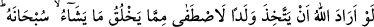
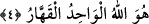

yaptıklarının sonunda elde ettikleri netice Allah Teâlâ’nın şu âyette buyurduğu gibi olur:
“Onların yaptıkları her bir ameli alır, saçılmış toza çevirip değersiz kılarız.” (el-
Furkân, 25/23).
Bugün farklı tabakalarda olan her iddiâ sâhibi kendi din ve mezhebinin hak olduğu
iddiâsındadır. Allah dünyada da âhirette de onlar arasında hükmünü verecektir.
Dünyada hak ehlinin göğüslerini İslâm nûru ile genişletmek, kalblerine îmânı yazmak,
onları kendi katından bir ruh ile desteklemek, sırlarına Hakk’ın şahidlerini keşfetmek ve
ruhlarına cemal ve celal sıfatları ile tecellî etmek sûretiyle hakkı hak olarak ortaya
koyar. Bâtılı ise hevâ ve bid’at ehlinin göğüslerini sıkıştırmak, kalblerini katılaştırmak,
sırlarını ve basîretlerini köreltmek, ruhlarını çeşitli perdelerle perdelemek sûretiyle
bâtılı boşa çıkarır. Âhirette ise hak ehlinin yüzlerini ağartmak, kitaplarını/amel
defterlerini sağlarından vermek, terazilerinin sevap tarafını ağırlaştırmak, onları sırattan
geçirmek, nurları önlerinden ve sağlarından aydınlatıp gitmek, cennete girdirmek ve
derecelerini yükseltmek sûretiyledir. Bâtıl ehlinin ise yüzlerini karartmak,
kitaplarını/amel defterlerini sol ellerinden ve arkalarından vermek, terazilerinin sevap
tarafını hafif kılmak, sıratta ayaklarını kaydırmak, cehennem ateşine sokmak ve dereke
dereke aşağılara indirmek sûretiyledir.
“Şüphesiz Allah, yalancı ve inkârcı kimseyi doğru yola iletmez.”
“Allah hiçbir yalancı ve nankörü doğru yola iletmez!” kavli, kendi makamından
başkasına burnunu sokan, hakkında sâdık olmadıkları bir rütbeyi elde ettikleri
iddiâsında bulunanları tehdîde işâret etmektedir. Allah böylelerini kendileri için
isâbetli, rüşd ve âkıbetlerine uygun olacak şeye aslâ hidâyet etmez. Bilfiil yaşamadan
önce yaşadığını iddiâ ettiği o rütbeden onu mahrum bırakır.
Hâfız şöyle der:
Süleyman’ın yüzüğü gibi bir yüzük olmazsa şayet
Yüzüğün nakışı ne üstünlük kazandırır?
Hudâ o hırkadan yüz kere bîzârdır
Ki onun bir yeninde yüz put ola
İşin/hâlin hakîkati ile tahakkuktan/onu yaşamaktan önce iddiâda bulunmaktan
koruyacak olan Allah’tır. Nimet veren ve müteâl/yüce olan O’dur.
4. Eğer Allah bir evlât edinmek isteseydi, elbette yarattıklarından dilediğini
seçerdi. O yücedir. O, tek ve kahhâr olan Allah’tır.